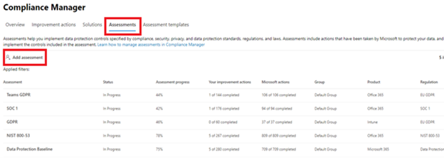

Compliance Manager
Last updated: 06/21/2021
We can all agree that protecting customer's data is of critical importance, but with an average of 222 updates per day from 1000 regulatory bodies, the task of safeguarding your organization’s compliance posture in such a rapidly evolving landscape can feel insurmountable at times.
Compliance Manager is an end to end information compliance management solution in the Microsoft 365 compliance center that helps you understand your organization's compliance posture. Compliance Manager uses the inventory of data protection risk allowing you to manage the complexities of controls, adhering to regulations and certifications along with reporting needed for auditors.
Your Deployment Plan⚓︎
The objective is to create a deployment plan that follows the progression of crawl-walk-run methodology while highlighting the user and administrator experience at each stage. Your focus should be on the end user result and the security controls you achieve with each implemented stage. Solutions or tools covered in this guide for deployment consideration are:
• Microsoft Compliance Configuration Analyzer (MCCA)
The DAG is not inclusive of all requirements or architectures needed for successful implementation of Microsoft 365 but rather a focus on security and compliance as it relates to solutions included as part of Microsoft information Protection & Compliance licenses.
See Microsoft 365 productivity illustrations for guidance on implementation of all M365 capabilities with focus on cross technologies.
Crawl Stage - The first stage is about starting to evaluate where your organization is today regarding the information security and compliance with your goal of defining a strategic direction for your organization. Using this strategy to foster adoption of a solution by gathering the requirements of supporting systems, impact on end users, and skillset needed for each role owner. The crawl phase describes steps you should do at the beginning of any deployment, whether your requirements are basic or advanced. It includes steps for product education, defining requirements, and evaluation or testing.
Walk Stage - The second stage builds the foundation for a successful, scalable, and sustainable deployment. In this phase, you plan the details of your implementation and to build the solution. You may also run a pilot or a proof of concept with a selected group of users or locations.
Run Stage - The last stage is about optimizing the solution for Microsoft 365. In this phase you will set up an automated scalable approach for each solution.
Following the above approach will lead to successful adoption and deployment of each solution while governing your data by deciding what to keep, what to delete, what is a regulatory requirement, and using a workflow to manage the lifecycle.
Compliance Manager Overview⚓︎
Compliance Manager allows your organization to simplify compliance and start reducing risk by completing pre-built assessments targeting industries, standards, regulations or leveraging a custom assessment created by you and your organization. In addition to the assessments, this tool provides step-by-step guidance on open actions and displays a score for measuring your compliance posture. The tool focuses on identifying gaps and controls that need to be addressed and provides suggestions on how to improve these items, drawing elements from standard Information Security and Compliance frameworks like GDPR, NIST etc.
Compliance Manager provides:
-
Built in assessments for common industry and regional standards and regulations, or custom assessments to meet your unique compliance needs.
-
Flagged issues with detailed step-by-step guidance on suggested improvement actions to help you comply with the standards and regulations that are most relevant for your organization.
-
Automated testing and validation to help you stay compliant with various regulations.
-
An overall risk-based compliance score to help understand your compliance posture by measuring your progress in completing improvement actions.
-
Frequent updates ensures that if a regulation or control changes, you are made aware of it to help you to continue to stay compliant.
Best Practices⚓︎
Below is a list of best practices we have gathered to help you take advantage of what Compliance Manager brings to your organization.
- Updates to an action propagate tenant wide. Our recommendation is to accept the updates so that you get the latest guidance and improvement actions to meet a requirement.
-
Use correctly formatted Excel files when working with Compliance Manager to prevent errors with the import process.
-
Export any existing assessment before deleting it in case you need to add it back through the import process.
-
If you reassign an action that has a pending update, the direct link to the action in the reassignment email will break if the update is accepted after reassignment. You can fix this by reassigning the action to the user after the update is accepted.
Prior to Deployment Plan⚓︎
Understanding your current organizational landscape⚓︎
Before starting your compliance journey, it is important to understand what current regulations your organization needs to comply with so that you know what regulations you need to track and monitor your progress against. Compliance Manager offers over 330 regulation assessments that you can use to help your organization stay compliant.
Most organizations are using some method to track these regulations, either with other tools or Excel spreadsheets. It is important to understand how your organization is managing this today, as Compliance Manager can standardize and centralize all of these into one location. If you are currently using other methods to track regulations, you can even bring your own controls into Compliance Manager. One of the primary values of using Compliance Manager is that we can provide actions items, assess, update, test and stay current with changes happening to the regulations. The pre-built assessments are being updated as regulations or technology changes, so that Microsoft can provide you the most up to date data in a central location.
When thinking about compliance for your organization it is important to make sure you have the right stakeholders or technical decision makers (TDM) involved in your Compliance Manager journey. For most organizations this is not just the IT department, although they might have a role to play in the implementation of some of the action items. Below is a list of key personas we see using and being involved in Compliance Manager discussions.
Key personas⚓︎
Compliance Manager personas at high level can be put into one of these categories:
Assessors:⚓︎
Assessors are compliance, security, privacy, and risk officers (Officers). They ensure that their organizational assets are compliant with applicable regulations, data is protected as per standards, and compliance / technology risks are managed as per their organizational policies. Assessors can also be auditors who maintain independent audit of assessment work performed by officers listed above.
How assessors normally interact with Compliance Manager:
-
They are most likely personas who create assessments as per their organizational compliance management needs.
-
They will work with admins to ensure that assessment actions are implemented, tested, and completed.
-
They will review assessment progress, compliance metrics, and risks with executive personas.
Admins:⚓︎
Admins are security, compliance, process, and IT administrators. These personas have the ability to make configurational changes to implement actions / controls. They are typically the people who need to pull evidence to showcase that actions / controls have been implemented and performing effectively.
How admins normally interact with Compliance Manager:
-
Admins will review actions assigned to them, implement these actions using S-C-M (security, compliance and management) solutions, and collect evidence for closing actions assigned to them.
-
They may create IT risk / data protection related assessment on their own, as per their org maturity around IT / Technology risk management.
-
They may participate in executive reviews.
Executives:⚓︎
Chief Compliance, IT, Information Security, Privacy, Finance, HR and Risk officers. Depending upon how compliance, security, privacy, and risk management functions are structured within an organization, these executives have overall responsibility for compliance and risk management.
How executives normally interact with Compliance Manager:
-
Set overall compliance and risk management policies and objectives for their organization. This will influence type and number of assessments created within Compliance Manager.
-
They may review Compliance Manager dashboard on ongoing basis to track compliance management progress, blockers, and risks.
Permissions⚓︎
Compliance Manager is enabled in your tenant but only individuals with the right access can view scores, add assessments and work with the actions.
-
Users will need at least the Compliance Manager reader role or Azure AD global reader role to access Compliance Manager. The Microsoft 365 global administrator for your organization will likely be the first user to access Compliance Manager. We recommend the global admin sign in and set user permissions as outlined below when visiting Compliance Manager for the first time.
-
Additional details about permissions and role type are available here: https://docs.microsoft.com/en-us/microsoft-365/compliance/compliance-manager-setup?view=o365-worldwide#where-to-set-permissions
Deployment Plan⚓︎
This document offers guidance and steps that customer compliance executive and IT teams can utilize to adopt the service. This document is divided into three sections offering an overview approach for service adoption using General Data Protection Regulation (GDPR) as the assessment of choice. The sections are designed to represent the recommended deployment approach crawl-walk-run for Microsoft 365 Compliance Manager.
Note
GDPR assessment has been chosen as the assessment of choice to demonstrate the walk approach; however, you can choose any other regulatory assessment that is relevant to your organization.
Crawl: Core Service⚓︎
This is where you should start your compliance journey. This will set the foundation for using Compliance Manager to help your organization become and stay compliant. This will include tasks like:
-
Becoming familiar with Compliance Manager, settings, and how to enable this service for your organization.
-
Going through key service features and capabilities.
-
Understanding your data protection baseline score.
-
Setup automated testing and scoring
-
Using the user history to audit who has what actions and reassign actions if needed.
How to enable this service for your organization⚓︎
Compliance Manager comes enabled by default for your organization. An initial score will be provided based on the Microsoft 365 data protection baseline. This baseline is a set of controls that includes key regulations and standards for data protection and general data governance. A great way to get started is to use this score to understand where your organization baseline is and ways to improve this by reviewing and taking actions outlined in your improvement actions. Also consider the concepts and process you use to correct and work with data baseline actions is the same process and concepts that apply to any other prebuilt or custom assessment you add to Compliance Manager.
Configure permissions and adding users to role groups⚓︎
Compliance Manager uses a role-based access control (RBAC) permission model. Only users who are assigned a role may access Compliance Manager, and the actions allowed by each user are restricted by role type. Permissions can be configured in two (2) places:
-
Azure Active Directory which allows you the ability to use PIMs (privileged identity management). There are four roles that can be used with Azure AD. The benefit of using PIMs is that you can enable just in time access. The drawback to this method is that currently, the available permission is not as granular as the permission in the security and compliance center.
-
Security and Compliance center (Compliance Center). There are five roles that can be used to set permissions for Compliance Manager. You have the ability to be a bit more granular here when assigning access via roles, but this is standing access to the users added to the roles.
- Customers in US Government Community (GCC) High and Department of Defense (DoD) environments can only set user permissions and roles for Compliance Manager in Azure AD. See below for Azure AD instructions and role type definitions.
Role Types⚓︎
Users will need at least the Compliance Manager reader role, or Azure AD global reader role to access Compliance Manager.
| User can: | Compliance Manager role | Azure AD role |
|---|---|---|
| Read but not edit data | Compliance Manager Reader | Azure AD Global reader, Security reader |
| Edit data | Compliance Manager Contribution | Compliance Administrator |
| Edit test results | Compliance Manager Assessor | Compliance Administrator |
| Manage assessments, and template and tenant data | Compliance Manager Administration | Compliance Administrator, Compliance Data Administrator, Security Administrator |
| Assign users | Global Administrator | Global Administrator |
Add users to Compliance Manager administrator role group⚓︎
A role group is a set of roles that allows users to perform their job across the Security & Compliance Center. For example, the Compliance Administrator role group includes (among other roles) the roles for Case Management, Content Search, and Organization Configuration (plus others), because someone who is a compliance admin will need the permissions for those tasks to perform their job. You can add role groups and achieve separation of roles and responsibilities by simply adding individual users as members to the role group.
The role groups you want to create help to apply principle of least privilege by delegating tasks and functions that you'll need to assign users to.
Create a custom role group for auditors⚓︎
You can directly add users to a specific role group or create custom role groups to expand the portfolio of the team responsible for managing compliance in an organization. One of these custom groups you should consider is the compliance auditors. These are users who can review the compliance posture of your organization with read only access to Compliance Manager by using the Compliance Manager Reader role.
Key service elements, features and capabilities⚓︎
Compliance Manager uses several data elements to help you manage your compliance activities. As you use Compliance Manager to assign, test, and monitor compliance activities, it’s helpful to have a basic understanding of the key elements: controls, assessments, templates, and improvement actions.
- Controls: A control is a requirement of a regulation, standard, or policy. It defines how you assess and manage system configuration, organizational process, and people responsible for meeting a specific requirement of a regulation, standard, or policy.
- Compliance Manager tracks the following types of controls:
- Microsoft managed controls: controls for Microsoft cloud services, which Microsoft is responsible for implementing.
- Your controls: sometimes referred to as customer managed controls, these are controls implemented and managed by your organization.
- Shared Controls: sometimes referred to as customer managed controls, these are controls implemented and managed by your organization.
- Compliance Manager automatically scans through your Microsoft 365 environment and detects your system settings, continuously and automatically updating your technical action status. Microsoft Secure Score is the underlying engine that performs the monitoring. Your action status is updated on your dashboard every 24 hours. Once you follow a recommendation to implement a control, you’ll typically see the control status updated the next day.
- Compliance Manager tracks the following types of controls:
-
Assessments: An assessment is a grouping of controls from a specific regulation, standard, or policy. Completing the actions within an assessment help you meet the requirements of a standard, regulation, or law.
-
Assessments have several components:
-
In-scope services: the specific set of Microsoft services applicable to the assessment
-
Controls: Microsoft managed, your controls and shared controls
- Assessment score: shows your progress in achieving total possible points from actions within the assessment that are managed by your organization and by Microsoft.
-
-
Templates: Templates to help you quickly create assessments. You can modify templates to create an assessment optimized for your needs. You can also build a custom assessment by creating a template with your own controls and actions (We will cover this in the Run section).
- Included and Premium Templates:
- Included templates are available for use as part of your organization’s licensing agreement.
- Premium templates must be purchased to create assessments from them. Once purchased, you may create as many assessments from a template as needed. You can also try these templates out before you buy them. (In the Appendix section we’ll cover how to sign up for a trial.)
- Active and inactive templates
- A template is considered active once you create an assessment from that template. Your assessment page has a counter near the top which displays the number of templates in use vs the number of assessments you are licensed to use. For example, if you see 2/5 that means you have 2 active templates out of 5 that you are licensed for. If you see 5/2 this means you have exceeded the limits you are licensed for, and you need to remove or purchase more license.
- A template is considered inactive if your organization isn’t using it for an assessment.
- Included and Premium Templates:
-
Improvement actions: Improvement actions help centralize your compliance activities. Each improvement action provides recommended guidance that’s intended to help you align with data protection regulations and standards. Improvement actions can be assigned to users in your organization to perform implementation and testing work. You can also store documentation, notes, and record status updates within the improvement action.
-
Groups: When creating assessments, you’ll assign them to a group. You can configure groups in whatever way is most logical for your organization. For example, you may group assessments by audit year, region, solution, teams within your organization, or some other way. Once you create groups, you can filter your Compliance Manager dashboard to view your score by one or more groups. It is important to note that the same action, if tenant scoped, can be in multiple groups. If this is the case, the action can be updated in one of the groups and it would be replicated to all groups that contain that action. For example, take MFA being required on Admin accounts. If this is enabled, it would be enabled for all groups that contain this action.
Understanding your data protection baseline score⚓︎
Compliance Manager by default creates a data protection baseline that can be used to implement data protection controls and measure the control effectiveness against this baseline. It helps to establish and maintain technical, procedural, and people control for your organization. Data protection baseline is built by leveraging leading standards for data protection, information security, and privacy. Using guidance provided by data protection baseline, you can protect your data against insider, and malicious threats. By implementing actions that are part of data protection baseline, you can get ahead of compliance by being better prepared for new regulations coming. Setting up a good baseline also builds a strong foundation before adding additional regulatory specific assessments.
Set up automated testing⚓︎
Some improvement actions in Compliance Manager are also monitored by Microsoft Secure Score. You can set up automated testing of actions that are jointly monitored, which means that when an action is tested and updated in Secure Score, those results sync with the same actions in Compliance Manager and count toward your compliance score.
Automatic testing is turned on by default for organizations new to Compliance Manager. When you first deploy Microsoft 365 or Office 365, it takes approximately seven days for Secure Score to fully collect data and factor it into your compliance score. When automated testing is turned on, the action’s test date won’t be updated, but its test status will update. When new assessments are created, scores automatically include Microsoft control scores and Secure Score integration.
If you want to change these setting it can be done by a global administrator at any time. You can turn off automated testing for common improvement actions or turn it on for individual actions.
User history⚓︎
User history helps you quickly identify which users have worked with improvement actions in Compliance Manager. The identifiable user data associated with improvement actions includes any implementation and testing work done, documents uploaded, and any notes entered. Understanding and retrieving this type of data may be necessary for your organization’s own compliance needs. You can use the search button to find a user who you are looking for, which can be useful when working with many users.
You might find it useful to be able to export the data to an Excel file which will contain a list of improvement actions currently assigned to a user and any evidence files uploaded by that user. This information can help you reassign open improvement actions. It is important to note that the report reflects the improvement action’s status as of its creation date. It’s not a historical report of all previous changes to its status or assignment.
If a user leaves the organization or their role changes, you might be required to reassign improvement actions from one user to another. This is possible to do in the Compliance Manager user history section. It is important to note that when you reassign an action, the document upload history doesn't change, but the name of the user who originally uploaded the documentation no longer appears within the improvement action.
Walk: Working with an assessment⚓︎
The Walk phase builds upon the components of the crawl phase and looks to add one or more regulatory assessments for your organization, such as GDPR.
This would include tasks like: * How to choose a pre-built assessment * How to read and understand your score * How to read, implement, and test your improvement actions * Assigning tasks and managing controls * How to track your way to become compliant * Keeping the assessment actions updated
The most important data elements for configuring Compliance Manager are Assessment Templates and Assessments. Compliance Manager provides a rich library of over 330 assessment templates, each of which represents a specific regulation, certification, or standard that aligns to an industrial, regional, and common data protection standard, such as GDPR or ISO 27001. These assessment templates contain all the control families and controls from the regulation or standard, and a set of actions that are mapped to these controls. These actions include both improvement actions for helping you meet the requirements of that regulation or standard, and Microsoft actions that have already been taken by Microsoft. Each action has points associated with it and these help determine your compliance score.
Choose a pre-built assessment⚓︎
To get started quickly, you can pick from one of over 330 assessments already set up and available to you in Compliance Manager. There is a wide selection of templates for regulations and certifications that align to industries, regions, and common data protection standards, such as GDPR and ISO 27001. Templates contain the controls and improvement actions for helping you meet the requirements of a particular certification. For a full list of templates available check out - Microsoft Compliance Manager templates list - Microsoft 365 Compliance | Microsoft Docs. Adding a pre-built assessment allows you to immediately begin to review actions items, make the required changes, test, and complete the action item. Within a few minutes, you can add multiple regulations that are important to your organization and start tracking your progress against meeting these regulations.
Assessment Types⚓︎
Assessment templates are added to Compliance Manager as new laws and regulations are enacted. Compliance Manager updates its templates when the underlying laws or regulations change.
Compliance Manager classifies assessment into two (2) categories.
- Included templates are templates included as part of your organization's licensing agreement.
- Premium templates display additional templates your organization may choose to obtain on additional credits
Below is the included templates for the M365 A5/E5/G5 license. Visit the Compliance Manager templates list for the most up-to-date information on assessments. Microsoft Compliance Manager templates list - Microsoft 365 Compliance | Microsoft Docs
- Microsoft Data Protection Baseline
- European Union GDPR (Microsoft 365, Office 365, Intune)
- ISO 27001:2013
- NIST 800-53 Rev.4
- NIST 800-53 Rev.5
- Cybersecurity Maturity Model Certification (CMMC) Levels 1 through 5 (G5 Only)
Understand groups⚓︎
Before you create or modify assessments, it’s important to understand how groups work. When you create an assessment, you’ll need to assign it to a group during the process. This is an important step to plan out before you create assessments. Groups are containers that you can use to organize your assessments that are logical to you. Some examples might be by year, regulation, department, or geographies.
An example of this might be:
-
Assessments 2020
- FFIEC IS
- GDPR
-
US 2020
- FFIEC IS
- FISMA
- United States of America Privacy Act
-
Ohio 2021
- Ohio Data Protection Act 2018
-
EU 2020
- GDPR
- Directive 2006/24/EC
It is important to understand how improvement actions work within a group and across groups. When two different assessments in the same group share improvement actions that are managed by you, any updates you make to an action's implementation details or status will automatically synchronize to the same action in any other assessment in the group. This synchronization allows you to implement one improvement action and meet several requirements across multiple regulations. If the improvement action is a tenant action, for example require MFA, there will only be one action for all groups. So, completing this in one group will apply the same status to all groups that have this action.
While working within a group you can see all the actions for that group and a breakdown of the score for the group you are working on. While you can always see the score for the tenant, it is sometimes easier to focus in on a particular group.
What to know when working with groups⚓︎
There are some additional guidelines when working with groups that you should be aware of.
- Group names must be unique within your organization. At this time, groups cannot be deleted but they can be reused.
- Groups don't have security properties. All permissions are associated with assessments.
- Once you add an assessment to a group, the grouping can't be changed. Related assessment controls in different assessments within the same group automatically update when completed.
- If you add a new assessment to an existing group, common information from assessments in that group are copied to the new assessment.
- Groups can contain assessments for the same certification or regulation, but each group can only contain one assessment for a specific product-certification pair. For example, a group can't contain two assessments for Office 365 and NIST CSF. A group can contain multiple assessments for the same product only if the corresponding certification or regulation for each one is different.
- Deleting an assessment breaks the relationship between that assessment and the group.
- When a change is made to an improvement that appears in multiple groups, that change is reflected in all instances of that improvement action.
Pre-built Assessments⚓︎
Now that you know how to configure groups, it’s time to get started by picking from one of the more than 330 assessments Compliance Manager offers out of the box. You’ll be asked to choose an assessment template when you start building an assessment. You can also create your own custom assessment template, which we will cover in the run phase. It can be quick and easy to use the templates we have built for you which also update automatically.
Below is an example of the assessments page. It lists the assessments you select to track for your organization and your compliance score denominator is determined by all your tracked assessments. Thus, the more assessments you add, the more improvement actions you see on your improvement actions page, and the higher your score denominator is.

Setting up an assessment⚓︎
There are two starting points for creating an assessment from a Compliance Manager template.
- You can begin the process from your assessments page by selecting the Add assessment button and then working through the assessment creation wizard.
- You can also start from your assessment templates page by finding the template you want and selecting it from the list to arrive at its details page. On the template details page, select Create assessment. You’ll then enter the wizard with your template already selected.
Assignment and tracking⚓︎
Improvement actions centralize your compliance activities. Each improvement action provides detailed implementation guidance to help you align with data protection regulations and standards. It is common that the Compliance Manager administrator is not always the person preforming the actions to implement the controls. Compliance Manager allows actions to be assigned to users in your organization to perform implementation and testing work. When you assign an action to someone, they get notified that they have been assigned and if they have the right permissions, they are able to see details about the action.
- Emails are not currently sent if you are in GCC High or a DOD environment
Implementation and testing⚓︎
The person or team who is assigned an action then uses the details of the action item to complete the work, conduct testing, upload evidence, and change the status of the action item. Once that has been completed, it is assigned to an assessor for validation. The assessor validates the work, examines the documentation, and selects the appropriate test status.
If test status is set to “Passed”: the action is complete, and the points achieved shows the maximum points achieved. The points are then counted toward your overall compliance score.
If test status is set to “Failed”: the action doesn't meet the requirements, and the assessor can update the notes and assign it back to the appropriate user for additional work.
Keeping the assessment actions update⚓︎
One of the many values of Compliance Manager is that it is continuously updated to keep up with regulatory changes and changes in M365. When you see a pending update label next to its name on the improvement actions page and on the details page of its related assessments, you can either accept the update or defer it to a later date. You can get more details about the update before accepting it or deferring it.
Updates normally occur on a quarterly cycle. An update occurs when there are changes related to scoring, automation, and/or scope. Changes may involve new guidance for improvement actions based on regulatory changes or could be because of product changes. Only the improvement actions managed by your organizations receive update notifications. We do not provide updates to the Microsoft managed actions.
Accepting updates helps ensure that you have the most updated guidance on using solutions and taking appropriate improvement actions to help you meet the requirements of the certification at hand. There are times when you might want to defer an update if you’re in the middle of completing an assessment that includes the improvement action. You may want to ensure you’ve finished work on it before you accept the update.
Accepted changes are permanent. When you accept an update to an action, you’re also accepting updates to any other versions or instances of this action. Updates will propagate tenant-wide for technical actions and will propagate group-wide for non-technical actions.
How to track your way to become compliant⚓︎
The Compliance Manager dashboard displays an overall compliance score. This score measures progress in completing recommended improvement actions within controls.
Compliance score can help in understanding your current compliance posture. It can also help prioritize actions based on their potential to reduce risk.
A score value is assigned at three (3) levels:
-
Improvement action score: each action has a different impact on your score depending on the potential risk involved.
-
Control score: this score is the sum of points earned by completing improvement actions within the control. This sum is applied in its entirety to your overall compliance score when the control meets both of the following conditions:
-
Implementation Status equals Implemented or Alternative Implementation, and
-
Test Result equals Passed.
-
-
Assessment score: this score is the sum of your control scores. It is calculated using action scores. Each Microsoft action and each improvement action managed by your organization is counted once, regardless of how often it is referenced in a control.
The overall compliance score is calculated using action scores, where each Microsoft action is counted once, each technical action you manage is counted once, and each non-technical action you manage is counted once per group. This logic is designed to provide the most accurate accounting of how actions are implemented and tested in your organization. You may notice that this can cause your overall compliance score to differ from the average of your assessment scores. Read more below about how actions are scored.
Initial score based on Microsoft 365 data protection baseline⚓︎
Compliance Manager gives you an initial score based on the Microsoft 365 data protection baseline. This baseline is a set of controls that includes key regulations and standards for data protection and general data governance. This baseline draws elements primarily from the National Institute of Standards and Technology Cybersecurity Framework (NIST CSF) and International Organization for Standardization (ISO), as well as from Federal Risk and Authorization Management Program (FedRAMP) and General Data Protection Regulation of the European Union (GDPR).
Your initial score is calculated according to the default Data Protection Baseline assessment provided to all organizations. Upon your first visit, Compliance Manager is already collecting signals from your Microsoft 365 solutions. You will be able to see how your organization is performing relative to key data protection standards and regulations. You will be also able to see suggested improvement actions to take.
Because every organization has specific needs, Compliance Manager relies on you to set up and manage assessments to help minimize and mitigate risk as comprehensively as possible.
Continuously assesses controls⚓︎
Compliance Manager automatically scans through your Microsoft 365 environment and detects your system settings, continuously and automatically updating your technical action status. Microsoft Secure Score is the underlying engine that performs the monitoring. Your action status is updated on your dashboard every 24 hours. Once you follow a recommendation to implement a control, you’ll typically see the control status updated the next day.
For example, if you turn on multi-factor authentication (MFA) in the Azure AD portal, Compliance Manager detects the setting and reflects it in the control access solution details. Conversely, if you didn’t turn on MFA, Compliance Manager flags that as a recommended action for you to take.
Learn more about Secure Score and how it works.
Action types and points⚓︎
Compliance Manager tracks two types of actions:
- Your improvement actions: actions that your organization manages.
- Microsoft actions: actions that Microsoft manages. Both types of actions have points that count toward your overall score when completed.
Technical and non-technical actions⚓︎
Actions are grouped by whether they are technical or non-technical in nature. The scoring impact of each action differs by type.
-
Technical actions are implemented by interacting with the technology of a solution (for example, changing a configuration). The points for technical actions are granted once per action, regardless of how many groups it belongs to.
-
Non-technical actions are managed by your organization and implemented in ways other than working with the technology of a solution. There are two types of non-technical actions: documentation and operational. The points for these actions are applied to your compliance score at a group level. This means that if an action exists in multiple groups, you will receive the action's point value each time you implement it within a group.
Example of how technical and non-technical actions are scored⚓︎
For example, you have a technical action worth 3 points that exists in 5 groups, and you have a non-technical action worth 3 points that exists in the same 5 groups.
If you successfully implement the technical action, the total number of points you receive is 3. This is because you only need to implement the action once for your tenant. The implementation and test status for the technical action will show the same in all instances of that action, in every group it belongs to.
This scoring logic is designed to provide the most accurate accounting of how actions are implemented and tested in your organization.
Score Value Determination⚓︎
Actions are assigned a score value based on whether they’re mandatory or discretionary, and whether they’re preventative, detective, or corrective.
Mandatory and discretionary actions⚓︎
- Mandatory actions can't be bypassed, either intentionally or accidentally. An example of a mandatory action is a centrally managed password policy that sets requirements for password length, complexity, and expiration. Users must follow these requirements to access the system.
- Discretionary actions rely upon users to understand and adhere to a policy. For example, a policy requiring users to lock their computer when they leave it is a discretionary action because it relies on the user.
Preventative, detective, and corrective actions⚓︎
- Preventative actions address specific risks. For example, protecting information at rest using encryption is a preventative action against attacks and breaches. Separation of duties is a preventative action to manage conflict of interest and guard against fraud.
- Detective actions actively monitor systems to identify irregular conditions or behaviors that represent risk, or that can be used to detect intrusions or breaches. Examples include system access auditing and privileged administrative actions. Regulatory compliance audits are a type of detective action used to find process issues.
- Corrective actions try to keep the adverse effects of a security incident to a minimum, take corrective action to reduce the immediate effect, and reverse the damage if possible. Privacy incident response is a corrective action to limit damage and restore systems to an operational state after a breach.
Each action has an assigned value in Compliance Manager based on the risk it represents:

Run: Customize and Expand Assessments⚓︎
Now that you have a strong foundation in Compliance Manager and you have worked with an out of box assessment template, we’ll look at how you can build on this to create your own assessments, expand on the prebuilt assessments, or use Compliance Manager to assess 3rd party platforms or applications. This can really drive home the value of having a centrally managed location to track all your compliance management needs. We see customers using a mix of out of box assessment and adding their own custom assessments or expanding on the out of box assessments to meet their company’s needs. This allows for a lot of flexibility.
We know that most organizations, in addition to Microsoft software, will have presence of heterogenous software, multiple on-prem services either commercially purchased on home grown, and multiple SaaS services such as Salesforce, ServiceNow or others. For an organization, it is important to have compliance to assessments for all Microsoft & Non-Microsoft services. Let’s look at how you can leverage Compliance Manager to complete 3rd party assessments or build bring-your own assessments to cover your entire organizational scope.
This section will focus on how you can leverage Compliance Manager to expand and cover your entire organizational scope by taking advantage of:
- Extending a prebuilt assessment by adding your own controls and improvements
- How to create your own custom assessment
Extend pre-built assessment templates⚓︎
First you might want to take what we give you with a prebuilt assessment and modify it to fit your organizational needs. You can do this by taking an out of the box assessment template and adding your own controls and improvement actions to the assessment template. This process is called “extending a Microsoft template” in Compliance Manager. When you extend an out of the box assessment template, it will continue to receive any updates released by Microsoft, which may happen when there are changes to the related regulation or product.
The nice benefit of this is you can customize what we have given to you as a template to meet your organizational needs or expand to assess your 3rd party platforms. An example of this might be GDPR regulation that you need to take some type of action on your on-prem environment. You could use the GDPR template to monitor and track everything inside of O365 but then have additional actions to track items that need to happen with your on-prem environment. This keeps everything under the GDPR Assessment score and when looking at the actions to stay compliant it is all in one location.
Let’s discuss how this process works. You first need to assemble a specially formatted Excel spreadsheet to import the necessary template data. There are specific requirements for the formatted Excel files used in the extension process and some points to be aware of to prevent errors in the import process:
- Your spreadsheet should contain only the actions and controls you want to add to the assessment.
- The spreadsheet can not contain any of the controls or actions that already exist in the assessment you want to modify.
- Consider including “extension” in your template’s title, for example, “GDPR – [your company name] extension”. This makes it easier to identify in the list on your assessment templates page as distinct from the standard Microsoft-provided template or a custom template with a similar name.
Create and maintain your own custom assessments⚓︎
If expanding an existing template does not meet your needs, or you already have an assessment template you manage in excel or another platform, you can build your own assessments from scratch. We call this creating a custom assessment and this capability is available at the A5/E5/G5 SKUS. Creating a custom assessment in Compliance Manager requires you to create your own template. To create your own template, you’ll first assemble a formatted Excel spreadsheet to import the necessary template data. A sample template can be found here: https://go.microsoft.com/fwlink/?linkid=2124865.
Begin by formatting your template data into an Excel spreadsheet using these instructions.
Formatting your template with Excel⚓︎
When you start with the Excel spreadsheet you will notice it contains four (4) tabs, three (3) of which are required:
- Template (required)
- ControlFamily (required)
- Actions (required)
- Dimensions (optional)
Template tab (required)⚓︎
The Template tab is required. The information in this tab provides metadata about the template. There are four (4) required columns. The columns must retain the order on the Excel sheet as listed below. You can add your own column after the four (4) columns to provide your own dimensions. If you do this, be sure to add them to the Dimensions tab using the instructions below.
- title: This is the title for your template which must be unique. It can't share a name with another template you have in Compliance Manager, including your own templates or an out of the box template.
- product: This is a required dimension. List the product associated with the template.
- certification: This is the regulation you're using for the template.
- inScopeServices: These are the services within the product that this assessment addresses (for example, if you listed Office 365 as the product, Microsoft Teams could be an in-scope service). You can list multiple services separated by two (2) semi-colons.
ControlFamily tab (Required)⚓︎
The ControlFamily tab is required. The required columns in this tab, which must follow the order provided in the sample spreadsheet, are:
- controlName: This is the control name from the certification, standard, or regulation, which is typically some type of ID. Control names must be unique within a template. You can't have multiple controls with the same name in the spreadsheet.
- controlFamily: Provide a word or phrase for the controlFamily, which identifies a broad grouping of controls. A controlFamily doesn't have to be unique; it can be listed more than once in a spreadsheet. The same controlFamily can also be listed in multiple templates, though they have no relation to each other. Every controlFamily must be mapped to at least one control.
- controlTitle: Provide a title for the control. Whereas the controlName is a reference code, the title is a rich text format typically seen in the regulations.
- controlDescription: Provide a description of the control.
- controlActionTitle: This is the title of an action that you want to relate to this control. You can add multiple actions by separating with two semi-colons with no space in between. Every control you list must include at least one action, and the action must exist (which means you can list an action that you list on the Actions tab of the same spreadsheet, an action that exists in a different template, or an action created by Microsoft). Different controls can reference the same action.
Actions tab (Required)⚓︎
The Actions tab is required. It designates improvement actions managed by your organization and not those of Microsoft, which already exist in Compliance Manager. The required columns for this tab, which must follow the order provided in the sample spreadsheet, are:
- actionTitle: This is the title for your action and is a required field. The title you provide must be unique. Important note: if you reference an action that you own which already exists (such as in another template) and you modify any of its elements in the subsequent columns, those changes will propagate to the same action in other templates.
- implementationType: In this required field, list one of the three implementation types below:
- Operational - actions implemented by people and processes to protect the confidentiality, integrity, and availability of organizational systems, assets, data, and personnel (example: security awareness and training)
- Technical - actions completed using technology and mechanisms contained in the hardware, software, or firmware components of the information system to protect the confidentiality, integrity, and availability of organizational systems and data (example: multi-factor authentication)
- Documentation - actions implemented through documented policies and procedures establishing and defining the controls required to protect the confidentiality, integrity, and availability of organizational systems, assets, data, and personnel (example: an information security policy)
- ActionScore: Provide a score for the action between 1 and 99 – you may only use whole numbers.
- ActionDescription: Provide a description of the action, which will be shown under “How to Implement” for the action’s page in Compliance Manager.
- (Optional) Dimension fields – use syntax dimension-yourdimensionkey. Add any additional dimensions you wish to use to describe this action – if you are using a new DimensionKey or DimensionValue, you need to provide it in the Dimensions Tab, described in the next section below.

Dimensions tab (Optional)⚓︎
The Dimensions tab is optional. However, if you reference a dimension elsewhere, you need to specify it here if it does not exist in the template, you've already created or in a Microsoft template. The columns for this tab are listed below:
- dimensionKey: list as "product", "certifications," "action purpose"
- dimensionValue: examples: Office 365, HIPPA, Preventative, Detective
You can view your existing dimensions by exporting an existing template. The exported spreadsheet will have the Dimensions tab, which lists all the dimensions used in the template.
Maintain your Assessments⚓︎
Over time you might need to modify or change the template you created. You can modify the template you created or extended. To start this process, you need to export the template to an Excel file. To export your template, go to your template details page and select the Export to Excel button.
Note
When exporting a template you extended from a Compliance Manager template, the exported file will only contain the attributes you added to the template. The exported file won’t include the original template data provided by Microsoft. To get such a report, you will need to export an assessment report.
If you need to modify a template you’ve already created, such as to add controls or to add or remove improvement actions, the process is like the template creation process. You’ll need to upload a formatted Excel file with your template data; however, there are details to be aware of as you format your file with changes to existing template data. We recommend you review these instructions carefully to ensure you don’t overwrite any existing data that you want to retain. Before starting it is always a good idea to have a backup/gold copy of the current assessment template before you make any changes.
Considerations⚓︎
- Using Compliance Manger is not a check mark or a guarantee that if the recommendations are followed, your organization is compliant.
- Use this guide along with the Compliance Manager quickstart guide to follow guidance on what items to do first to use the tool to its fullest.
- Compliance Manager leverages key elements in its management of activities. We recommend understanding controls, risk assessments, and grouping the controls into an assessment. We recommend that you start with deploying the built-in assessments before modifying to create a custom assessment.
- Compliance Manager auto scans the environment to update technical action status with the dashboard every 24 hours. For example, if you implement a control, the update will be visible the following day.
- When you open Compliance Manager for the first time you will see a baseline score for your organization. For further details on your score, review how your compliance score is calculated.
Helpful Resources⚓︎
-
Compliance manager official Documentation - Microsoft Compliance Manager - Microsoft 365 Compliance | Microsoft Docs
-
Microsoft Compliance Manager One stop shop - Microsoft Compliance Manager One Stop Shop Resource Page
-
Microsoft 365 Roadmap Website- has public details about when new features are in development and when the features are targeted to launch or are available. To see details about a particular product, filter the check boxes to select what product/s you are interested in. https://www.microsoft.com/en-us/microsoft-365/roadmap
-
Microsoft 365 Compliance Documentation https://docs.microsoft.com/en-us/microsoft-365/compliance/
Review the FAQ for Compliance Manager to answer a question you might have about using Compliance Score in the past and how it is part of Compliance Manager solution.
Knowledgebase from Customer Experience Engineering Team⚓︎
Ready to become the hero of your organization? Learn more about deploying Microsoft Information Protection & Compliance features with the resources below:
- Join our Preview Program
- Visit all Community Resources https://aka.ms/MIPC/CommunityResources
- Learn from our webinar series and YouTube video series https://aka.ms/MIPC/Webinars and http://aka.ms/MIPC/YouTube
- Read our latest blog posts https://aka.ms/MIPblog and https://aka.ms/CompBlog
- Train End Users for adoption of labels:
- Ask us on Yammer https://aka.ms/MIPC/AskMIPTeam
- Follow us on Twitter https://twitter.com/MIPnews using the tag #MicrosoftIP
- Email us – mipsccxe@microsoft.com
Appendix⚓︎
This section contains links to the information regarding license requirements and provides additional links to additional information related to Microsoft Information Protection & Compliance.
License Requirements⚓︎
Below contains the necessary licenses for specific solutions outlined in the Deployment Acceleration Guide. While this information is current as of the writing of this document, refer to Microsoft 365 Licensing Guidance for Security & Compliance for the latest information as it may change.
Compliance Manager is available to organizations with Office 365 and Microsoft 365 licenses. Assessment availability and management capabilities depend on your licensing agreement. View service description details.
Customers with Office 365 E1/A1/E3/A3/G3 and Microsoft 365 E1/A1/E3/A3/G3 licenses will be able to access the Data Protection Baseline assessment and be able to purchase premium assessments.
Customers with Office 365 E5/A5/G5 and Microsoft 365 E5/A5/G5 licenses will be able to access Data Protection Baseline, GDPR, NIST 800-53 and ISO 27001 out-of-the-box assessments. They will also be able to create custom assessments.
Starting July 1, 2021, all SKUs will be able to purchase premium assessments.
In addition, for G5 customers will get additional Cybersecurity Maturity Model Certification (CMMC) Levels 1 through 5 out-of-the-box assessments.
We do offer a trial SKU for Premium templates so you can try up to 25 out for 30 days.
If you do not have the required license, you can add trial SKUs to try out the E5 or Premium assessments. To add premium assessments, you will want to add the Compliance Manager Premium Assessment Add-On Trial from your license, this will give you the opportunity to try out up to 25 premium assessments.
Note
Please email the CxE team with any suggestions related to products, webinars, blogs, or ideas for additional training. All support issues should be directed through the appropriate channels of support or community forums.